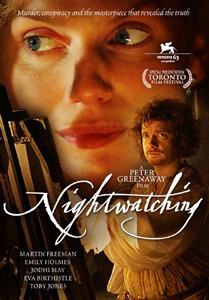
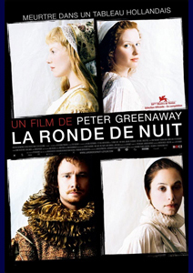
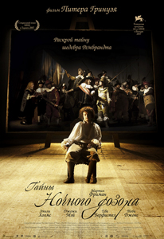
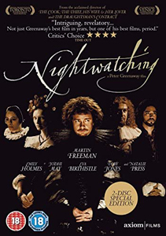
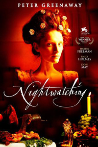
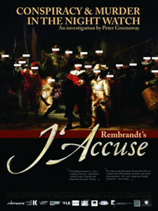

2007

The film is centred on the creation of The Night Watch, Rembrandt's most famous work, depicting civilian militiamen who wanted to be celebrated in a group portrait. The film posits a conspiracy to murder within the musketeer regiment of Frans Banninck Cocq and Willem van Ruytenburch, and suggests that Rembrandt may have immortalised a conspiracy theory using subtle allegory in his group portrait of the regiment, subverting what was to have been a highly prestigious commission for both painter and subject. The film also depicts Rembrandt's personal life, and suggests he suffered serious consequences in later life as a result of the accusation contained in this most famous painting.
Rembrandt van Rijn
Saskia van Uylenburg
Geertje Dircx
Hendrickje Stoffels
Titia Uylenburgh
Marieke
Marita
Frans Banninck Cocq
Willem van Ruytenburch
Herman Wormskerck



The film was described by co-producer Jean Labadie as "a return to the Greenaway of The Draughtsman's Contract." It features Greenaway's trademark neo-classical compositions and graphic sexuality. The music is by Wlodek Pawlik. The film premiered in competition, at the Venice Film Festival. Nightwatching was the first feature in Greenaway's film series "Dutch Masters".
Rembrandt's J'Accuse is a 2008 documentary which is considered a companion piece to Nightwatching, since it came out a year after Greenaway's film and features many of the same actors and sets. It is a criticism of today's visual illiteracy argued by means of a forensic search of Rembrandt's The Night Watch and in which Greenaway addresses 34 "mysteries" associated with the painting, illustrated by scenes from the drama and explains the conspiracy about a murder and the motives of all its characters who have conspired to kill for their combined self-advantage.


